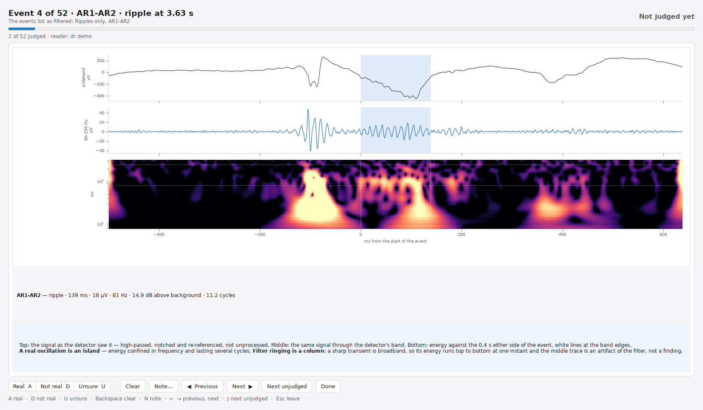
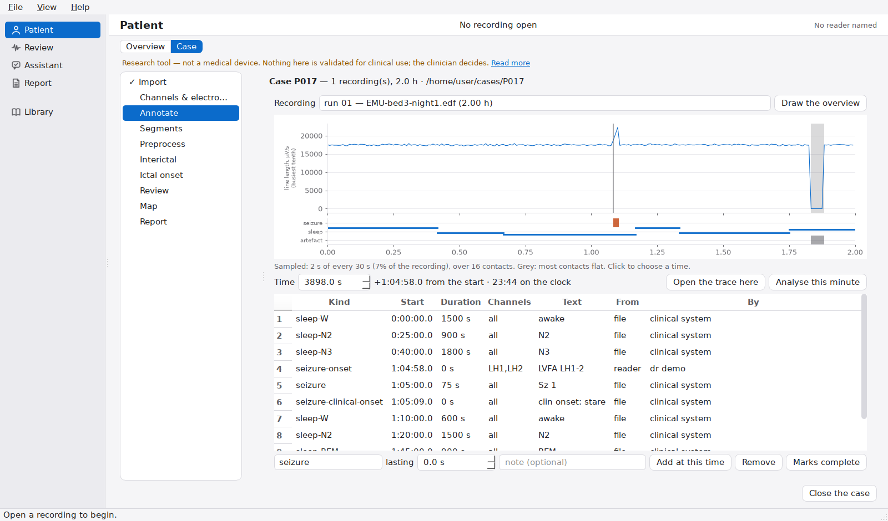

Onset Review: traceable analysis of high-frequency oscillations and seizure onset in intracranial EEG
An open-source Python library and desktop application for detecting ripples, fast ripples and interictal epileptiform discharges, estimating channel event rates with exact confidence intervals, computing the Epileptogenicity Index of seizure onset, and recording a reader's event-level review.
1. Overview
High-frequency oscillations (HFOs; ripples, 80–250 Hz, and fast ripples, 250–500 Hz) and the epileptogenicity of seizure onset are studied as candidate markers of epileptogenic tissue in stereo-EEG and electrocorticography. Reported HFO results depend on the detector, the threshold, the recording window analysed, and on whether a difference between channel rates exceeds what counting noise alone would produce. Onset Review is designed to make each of these explicit:
- every channel rate is reported with an exact Poisson 95% confidence interval, and channels whose intervals overlap that of the highest-rate channel are reported as a tied set rather than ranked;
- every detected event is stored with its signal window, detector, feature values and, if rejected, the rejection criterion, so that each reported number can be traced to the events and samples behind it;
- a reader can adjudicate individual events (real, not real, unsure); verdicts are stored per reader and carried into the exported report;
- the validation analyses reported below are distributed with the scripts and intermediate tables that reproduce them.
The software comprises an analysis library (onset_hfo), a
Qt desktop application built on MNE-Python's signal browser
(onset_review), and an optional assistant
(onset_agent) that answers questions about a saved analysis
with a locally run open-weight language model, under checks described in
§2.7. All analyses can also be run from the command line. For research,
the application's analysis page includes scripts that train a learned
second stage, including any braindecode network, on candidate events; no
trained model is used in the clinical views
(EVENTML.md).

2. Methods
A summary of the default analysis. Full descriptions, parameters and their sources are in docs/METHODS.md.
2.1 Data input
Recordings are read with MNE-Python from the formats it supports (including EDF/BDF, BrainVision and FIF) and from BIDS-iEEG datasets. Public datasets can be opened directly from OpenNeuro; for multiplexed BrainVision and EDF/BDF files only the requested time window is transferred, using HTTP range requests. On import the user confirms which channels are intracranial. Scalp EEG and MEG can be opened but are not validated.
2.2 Preprocessing
Default chain: removal of non-neural and bad channels; 1 Hz zero-phase high-pass filter; notch filters at the mains frequency and its harmonics (2 Hz wide); bipolar montage between consecutively numbered contacts of each electrode. Optional steps mark muscle and high-amplitude segments, which are excluded from the rate denominator rather than deleted.
2.3 HFO detection
Four detectors share all stages except the thresholded feature: root-mean-square amplitude and short-time energy (after Staba et al., 2002), line length (Esteller et al., 2001; Gardner et al., 2007) and the Hilbert envelope (Crépon et al., 2010). Shared stages: zero-phase band-pass filtering; the feature in a 3 ms sliding window; a per-channel threshold of median + κ robust standard deviations (1.4826 × median absolute deviation); extension of crossings while the feature exceeds 2 robust SD and merging of crossings closer than 10 ms; a supra-threshold duration of at least 6 ms and an extended duration of at most 200 ms; and at least six rectified peaks above 2 robust SD of the band-passed signal. The default κ is 5.0 (3.0 for line length); values measured against published markings (2.0 for ripples, 5.0 for fast ripples) are available as presets. The detectors are adaptations, not reimplementations of the cited detectors.
2.4 Event validation
Band-pass filtering of sharp transients produces oscillation-like ringing (Bénar et al., 2010). Each candidate is therefore tested on the signal before band-pass filtering: its in-band spectral peak must exceed a straight-line fit to the log–log background spectrum by at least 4 dB, it must span at least two cycles of its peak frequency, and, when its spectrum cannot be measured, it is rejected if it coincides with a large 1–30 Hz deflection. Rejected events are retained with the criterion that rejected them. A separate detector (5–60 Hz) finds interictal discharges and rejects electrode pops by their slope.
2.5 Rates, intervals and tied sets
A channel's rate is its accepted events per minute of usable recording. Treating the count k in T minutes as Poisson, the 95% interval is the exact (Garwood, 1936) interval [χ²0.025(2k)/2, χ²0.975(2k+2)/2] / T. Channels whose intervals overlap that of the highest-rate channel form its tied set; the leader is said to stand out only when its interval does not overlap that of the median channel. This is a descriptive criterion, not a formal test of difference or equivalence.
2.6 Seizure onset
The Epileptogenicity Index follows the form of Bartolomei et al. (2008): the ratio of energy in 12.4–97 Hz to that in 3.5–12.4 Hz, in 1 s windows every 0.25 s, normalised to a pre-onset baseline; a Page–Hinkley change-point per channel within 10 s before to 30 s after the marked onset; and the ratio summed over H = 5 s after the change, divided by the delay after the earliest channel plus τ = 1 s, scaled to a maximum of 1. Values are not interchangeable with other EI implementations.
2.7 Evidence-constrained assistant (optional)
The assistant answers questions about one saved analysis using an open-weight model (Qwen2.5 or Qwen3, chosen to fit the machine's memory) that by default runs locally through Ollama or in-process, so that no data leave the computer. It reads the analysis through nine read-only tools. Questions about treatment, diagnosis, prognosis, the seizure-onset zone or other patients are refused before the model is called. Citations the model invents are removed, and every number in an answer other than a whole number from 0 to 20 must match, up to rounding, a value the tools returned; an answer that fails is returned once for correction and is otherwise withheld. When the assistant drafts the report's findings or limitations paragraph, its statements about the busiest channel, the tied set, the quality checks and the reader's verdicts are also checked against the analysis, and each sentence is listed with the evidence windows and queries it rests on. Elsewhere the checks cannot detect a correct number attributed to the wrong channel. The report's Methods paragraph is written from the analysis settings, not by the model. The exported report, not the assistant, is the authoritative output.




3. Validation
Validation used three public OpenNeuro datasets (CC0): ds003498 (20 patients, interictal sleep recordings at 2000 Hz with published HFO markings, resected contacts and surgical outcome), ds003029 (ictal recordings with clinician-marked onset zones) and ds004100 (interictal and ictal recordings with onset zones and outcome). The ds003498 markings are the output of an automated detector validated by the source study against visually marked events; they are referred to here as reference markings. Each result can be regenerated from the committed tables.
| Analysis | Data | n | Result |
|---|---|---|---|
| Channel-rank agreement with reference HFO markings (mean Spearman ρ) | ds003498, first 60 s, reviewed channels; 41,187 markings | 20 patients | ρ = 0.66 for ripples (RMS, κ = 2.0) and 0.61 for fast ripples (κ = 5.0). Thresholds were chosen on the same data, so these values are optimistic. |
| Surgical outcome: highest-rate fast-ripple channel inside the resection | ds003498, whole first runs | 13 seizure-free, 7 recurrence |
Reference markings: 11/13 vs 3/7, AUC 0.71 (95% CI 0.49–0.92), p = 0.12. Detector: 10/13 vs 3/7, AUC 0.67 (0.45–0.89), p = 0.17. The cohort has 80% power only for AUC of about 0.8–0.85; no comparison survives Bonferroni correction across 35 tests. |
| Stability of the per-patient result | ds003498 | 20 patients | Same inside/outside answer in five disjoint 60 s windows: 9/20 (reference), 16/20 (detector). Across the first five whole runs: 16/18 and 14/18 patients with more than one run. |
| Epileptogenicity Index vs clinician-marked onset zone (median per-patient AUC) | ds003029, 73 seizures | 28 patients | 0.80 (0.70–0.87), above 0.5 in 25/28. Control with the analysis moved 40 s before onset: 0.58 (0.47–0.74), 12 patients. |
| Replication with unchanged settings | ds004100 | 54 patients | 0.79 (0.72–0.85); control 0.55 (0.52–0.60). |
| Assistant: fixed bank of questions about five saved analyses | 111 questions | 2 models | Qwen2.5-7B: 65 of 71 data questions correct, none wrong (5 withheld by the checks, 1 declined). Qwen2.5-3B: 51 correct, 2 wrong. Both refused all 25 out-of-scope questions and followed none of 15 planted instructions. Replies were labelled by the developer. |
Dependence on the analysis window
An earlier version of the outcome analysis, restricted to the first 60 s of each recording, gave AUC 0.82, p = 0.007 for the reference markings. Repeated on five disjoint 60 s windows, p ranged from 0.007 to 0.613; on whole recordings the result is AUC 0.71, p = 0.12. The outcome analysis therefore uses whole recordings, and results are reported with tied sets rather than a single channel.

Software testing
The test suite (1,688 tests) runs without network access or patient recordings, on synthetic recordings with events at known times, on the committed result tables, and against local stand-ins for OpenNeuro and Ollama. Continuous integration runs it on Python 3.10 and 3.12 and builds the desktop window headless. Tests establish that the code meets its specification; they do not validate the method on patients.
Detailed reports: detector evaluation, surgical outcome, seizure onset, assistant.
4. Installation
Linux bundle (Ubuntu, Pop!_OS)
Download onset-hfo-<version>-linux.tar.gz from the
latest release:
tar xzf onset-hfo-*-linux.tar.gz cd onset-hfo-*-linux ./install.sh --with-sample --with-assistant ~/.local/bin/onset-review
--with-sample adds one minute of a public
recording; --with-assistant installs Ollama and a model
sized to the machine. Both are optional.
From source (Python ≥ 3.10)
git clone https://github.com/berdakh/onset-hfo.git cd onset-hfo/onset-hfo python -m venv .venv && . .venv/bin/activate pip install -e ".[review]" onset-review
The library alone (pip install -e .) runs
from the command line. The desktop application requires Qt (PySide6).
See the installation guide.
- Dependencies
- MNE-Python, NumPy, SciPy, pandas; PySide6 for the desktop application; Ollama or PyTorch/transformers for the optional assistant.
- Input formats
- Formats read by MNE-Python (EDF/BDF, BrainVision, FIF and others); BIDS-iEEG; OpenNeuro datasets.
- Outputs
- Result store (events, rates, intervals, evidence windows), exported report (Markdown/PDF), reader verdicts, tables for batch analyses.
- Tested platform
- Ubuntu, Python 3.10 and 3.12.
5. Documentation
- User manual: from a first recording to a patient case.
- Reader's guide: each panel and setting, and its effect on the results.
- Methods: detectors, validation, intervals and statistics.
- Assistant: tools, checks and their known gaps.
- Data: the public datasets used and how they are retrieved.
- Limitations.
- Notebooks: eight Jupyter notebooks, each opening in Google Colab, covering detection, the assistant, detector validation, the outcome study, annotation and the assistant evaluation.
- Introductory tutorial on HFOs for readers new to intracranial EEG.
Related software
Other open tools for HFO and seizure-onset analysis include RIPPLELAB (MATLAB; Navarrete et al., 2016), HFOApp (MATLAB; Zhou et al., 2021), PyHFO (Python; Zhang et al., 2024), EPINETLAB (EEGLAB plugin; Quitadamo et al., 2018), AnyWave (Colombet et al., 2015) and BrainQuake (Python; Cai et al., 2022).
6. Citation
If you use Onset Review in published work, please cite the archived release you used. The most recent release with a DOI is 0.3.18:
Abibullaev, B. (2026). Onset Review (version 0.3.18) [Computer software]. Zenodo. https://doi.org/10.5281/zenodo.23417172
@software{abibullaev_onset_review_2026,
author = {Abibullaev, Berdakh},
title = {Onset Review},
version = {0.3.18},
year = {2026},
publisher = {Zenodo},
doi = {10.5281/zenodo.23417172},
url = {https://github.com/berdakh/onset-hfo}
}
Machine-readable metadata are in CITATION.cff. Please also cite the datasets you analyse.
7. Intended use and limitations
Onset Review is intended for research on intracranial EEG. It must not be used to make clinical decisions.
- Regulatory status. Not a medical device; not validated for clinical use; no diagnosis or recommendation is issued, and the report format has no field for one.
- Physiological HFOs. Ripples also occur in normal cortex; a high rate does not by itself identify epileptogenic tissue.
- Validation scope. The outcome cohort has 20 patients from one centre and the association, though in the published direction, is not significant. Agreement is measured against another detector's output, not against a census of events.
- Montage. Bipolar channels pair consecutively numbered contacts, which on grids are not always neighbours.
- Assistant. Its checks prevent unsupported numbers, not misleading emphasis, omissions or a correct value attributed to the wrong channel.
- Data governance. Users analysing their own recordings are responsible for ethics approval, de-identification and data protection.